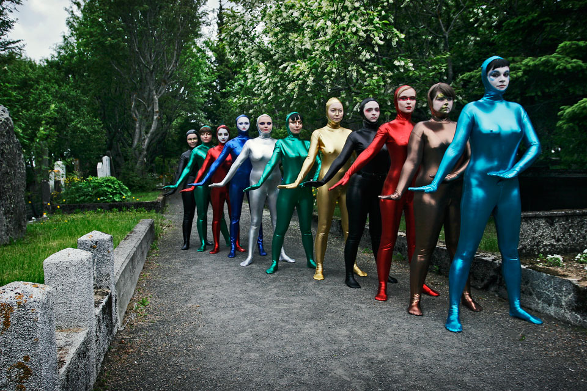

Episode 2: Spandex Attack
Episode 2 of The Weird Girls Project revolved around custom made spandex suits and the concept of ‘freak’. It was the first true exploration of women's reactions to the unknown and pushing them beyond their comfort zone. The photo shoot by respected Icelandic photographer Hörður Sveinsson took place in Reykjavík’s oldest cemetery.
- Producer, Concept and Artistic Direction: Kitty Von-Sometime
- Photography: Shot by Hördur Sveinsson and Kitty Von-Sometime
- Video: Shot and edited by Kitty Von-Sometime
- Costumes: Made by Chao Zhou
- Theme Music: If you don't jump you're English - Gus Gus
- 17th June 2007
